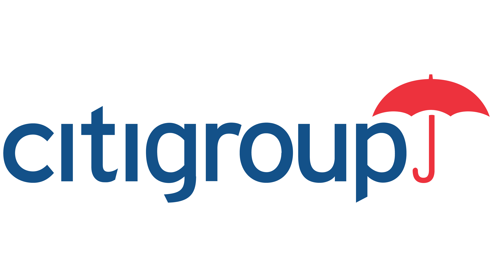

Three main reasons I'm pursuing Software engineering:
I initially started exploring my interest in software engineering by self studying and learning through resources I found online, such as:
After self-studying, I attended a coding bootcamp, App Academy, to further pursue my interest and learn how to turn my interest into a career. At App Academy, I learned:
To support and enhance my understanding of the concepts and languages learned in class, I created three projects: Monetary Gain on the Brain, MomentCaptur, and WaveSense. Each project utilizes different tech stacks and is a reflection of my hobbies.
Prior to pursuing a career in Software Engineering, I worked in public accounting as an auditor primarily in the Real Estate industry and as a State and Local Tax Audit Intern. Through my previous work experiences, I've worked in fast paced environments, learned how to efficiently manage my time, have effective communication skills and work collaboratively in teams.
Monetary Gain on the Brain is a data visualization application that shows how much a specified amount grows depending on various investments.

A photography sharing application inspired by Flickr where users can create photo posts, create comments, and like others’ posts.
A single-page audio visualizer application where users can select available songs or load local files and see a visual display of movements based on audio waves.
Please feel free to contact me for further information or if you have any questions at maywu4@gmail.com or connect with me on Linkedin!